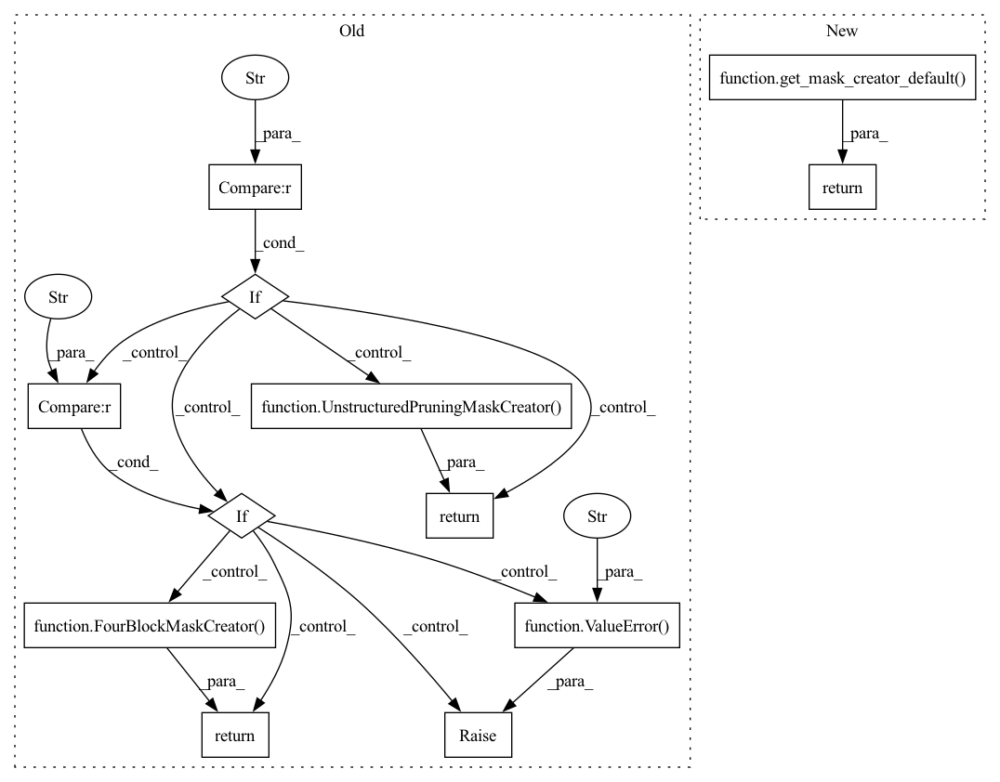

Pattern ID :2545
Before Change
:param params: list of parameters to be masked
:return: mask creator object to be used by this pruning algorithm
if self.mask_type == "unstructured" :
return UnstructuredPruningMaskCreator()
elif self.mask_type == "block" :
return FourBlockMaskCreator()
else:
raise ValueError(
f"Unknown mask_type {self.mask_type}. Supported mask types include "
""unstructured" and "block""
)
def _get_scorer(self, params: List[Parameter]) -> PruningParamsScorer:
:param params: list of Parameters for scorer to trackAfter Change
:param params: list of parameters to be masked
:return: mask creator object to be used by this pruning algorithm
return get_mask_creator_default( self.mask_type)
def _get_scorer(self, params: List[Parameter]) -> PruningParamsScorer:
:param params: list of Parameters for scorer to trackIn pattern: SUPERPATTERN
Frequency: 3
Non-data size: 12
Instances Fragment ID: 10507596
Project Name: neuralmagic/sparseml
Commit Name: d984ed250d42cc6c0ae889bb36bf643de3ec922c
Time: 2022-03-09
Author: bfineran@users.noreply.github.com
File Name: src/sparseml/pytorch/sparsification/pruning/modifier_pruning_magnitude.py
M Class Name: GMPruningModifier
N Class Name: GMPruningModifier
M Method Name: _get_mask_creator(3)
N Method Name: _get_mask_creator(3)
M Parent Class: BaseGradualPruningModifier,BaseGMPruningModifier
N Parent Class: BaseGradualPruningModifier,BaseGMPruningModifier
M File Name: src/sparseml/pytorch/sparsification/pruning/modifier_pruning_magnitude.py
N File Name: src/sparseml/pytorch/sparsification/pruning/modifier_pruning_magnitude.py
M Start Line: 155
M End Line: 165
N Start Line: 155
N End Line: 155
Before Change
:param params: list of Parameters to be masked
:return: mask creator object to be used by this pruning algorithm
if self._mask_type == "unstructured" :
return UnstructuredPruningMaskCreator()
elif self._mask_type == "block" :
return FourBlockMaskCreator()
else:
raise ValueError(
f"Unknown mask_type {self._mask_type}. Supported mask types include "
""unstructured" and "block""
)
def _get_scorer(self, params: List[Parameter]) -> PruningParamsGradScorer:
:param params: list of Parameters for scorer to trackAfter Change
:param params: list of Parameters to be masked
:return: mask creator object to be used by this pruning algorithm
return get_mask_creator_default( self.mask_type)
def _get_scorer(self, params: List[Parameter]) -> PruningParamsGradScorer:
:param params: list of Parameters for scorer to track Fragment ID: 10507597
Project Name: neuralmagic/sparseml
Commit Name: d984ed250d42cc6c0ae889bb36bf643de3ec922c
Time: 2022-03-09
Author: bfineran@users.noreply.github.com
File Name: src/sparseml/pytorch/sparsification/pruning/modifier_pruning_mfac.py
M Class Name: MFACPruningModifier
N Class Name: MFACPruningModifier
M Method Name: _get_mask_creator(3)
N Method Name: _get_mask_creator(3)
M Parent Class: BaseGradualPruningModifier
N Parent Class: BaseGradualPruningModifier
M File Name: src/sparseml/pytorch/sparsification/pruning/modifier_pruning_mfac.py
N File Name: src/sparseml/pytorch/sparsification/pruning/modifier_pruning_mfac.py
M Start Line: 299
M End Line: 309
N Start Line: 298
N End Line: 298
Before Change
:param params: list of Parameters to be masked
:return: mask creator object to be used by this pruning algorithm
if self._mask_type == "unstructured" :
return UnstructuredPruningMaskCreator()
elif self._mask_type == "block" :
return FourBlockMaskCreator()
else:
raise ValueError(
f"Unknown mask_type {self._mask_type}. Supported mask types include "
""unstructured" and "block""
)
@staticmethod
def _reset_momentum_buffer(optimizer):
if "state" in optimizer.state_dict():After Change
:param params: list of Parameters to be masked
:return: mask creator object to be used by this pruning algorithm
return get_mask_creator_default( self.mask_type)
@staticmethod
def _reset_momentum_buffer(optimizer):
if "state" in optimizer.state_dict(): Fragment ID: 10507598
Project Name: neuralmagic/sparseml
Commit Name: d984ed250d42cc6c0ae889bb36bf643de3ec922c
Time: 2022-03-09
Author: bfineran@users.noreply.github.com
File Name: src/sparseml/pytorch/sparsification/pruning/modifier_pruning_acdc.py
M Class Name: ACDCPruningModifier
N Class Name: ACDCPruningModifier
M Method Name: _get_mask_creator(3)
N Method Name: _get_mask_creator(3)
M Parent Class: BasePruningModifier
N Parent Class: BasePruningModifier
M File Name: src/sparseml/pytorch/sparsification/pruning/modifier_pruning_acdc.py
N File Name: src/sparseml/pytorch/sparsification/pruning/modifier_pruning_acdc.py
M Start Line: 228
M End Line: 238
N Start Line: 227
N End Line: 227